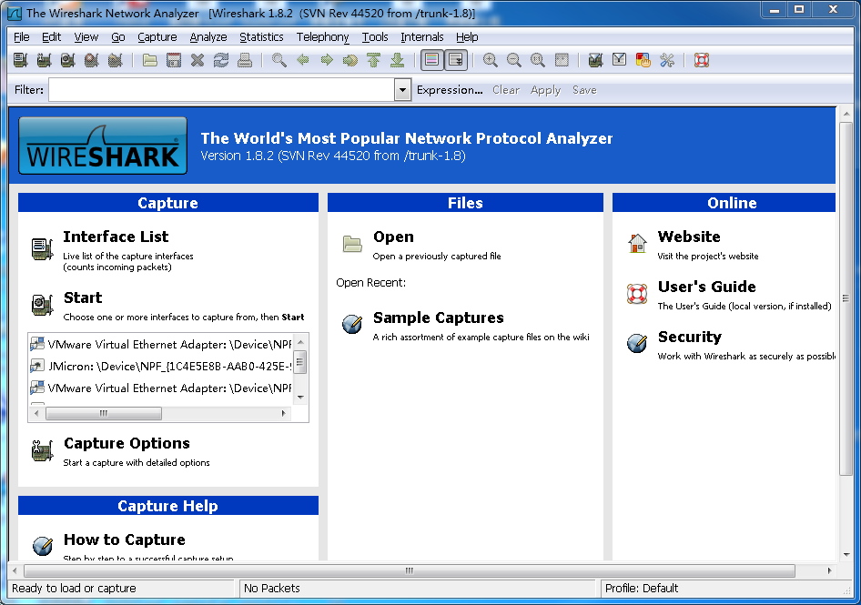
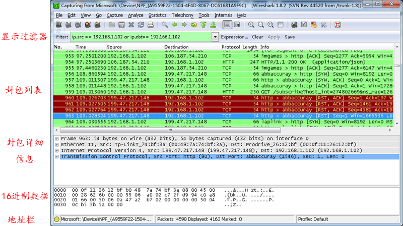

之前写过一篇博客：用 Fiddler 来调试HTTP，HTTPS。 这篇文章介绍另一个好用的抓包工具wireshark， 用来获取网络数据封包，包括http,TCP,UDP，等网络协议包。
记得大学的时候就学习过TCP的三次握手协议，那时候只是知道，虽然在书上看过很多TCP和UDP的资料，但是从来没有真正见过这些数据包， 老是感觉在云上飘一样，学得不踏实。有了wireshark就能截获这些网络数据包，可以清晰的看到数据包中的每一个字段。更能加深我们对网络协议的理解。
对我而言， wireshark 是学习网络协议最好的工具。
阅读目录
- wireshark介绍
- wireshark不能做的
- wireshark VS Fiddler
- 同类的其他工具
- 什么人会用到wireshark
- wireshark 开始抓包
- wireshark 窗口介绍
- wireshark 显示过滤
- 保存过滤
- 过滤表达式
- 封包列表(Packet List Pane)
- 封包详细信息 (Packet Details Pane)
- wireshark与对应的OSI七层模型
- TCP包的具体内容
- 实例分析TCP三次握手过程
wireshark介绍
wireshark的官方下载网站： http://www.wireshark.org/
wireshark是非常流行的网络封包分析软件，功能十分强大。可以截取各种网络封包，显示网络封包的详细信息。
wireshark是开源软件，可以放心使用。 可以运行在Windows和Mac OS上。
使用wireshark的人必须了解网络协议，否则就看不懂wireshark了。
Wireshark不能做的
为了安全考虑，wireshark只能查看封包，而不能修改封包的内容，或者发送封包。
Wireshark VS Fiddler
Fiddler是在windows上运行的程序，专门用来捕获HTTP，HTTPS的。
wireshark能获取HTTP，也能获取HTTPS，但是不能解密HTTPS，所以wireshark看不懂HTTPS中的内容
总结，如果是处理HTTP,HTTPS 还是用Fiddler, 其他协议比如TCP,UDP 就用wireshark
同类的其他工具
微软的network monitor
sniffer
什么人会用到wireshark
1. 网络管理员会使用wireshark来检查网络问题
2. 软件测试工程师使用wireshark抓包，来分析自己测试的软件
3. 从事socket编程的工程师会用wireshark来调试
4. 听说，华为，中兴的大部分工程师都会用到wireshark。
总之跟网络相关的东西，都可能会用到wireshark.
wireshark 开始抓包
开始界面

wireshark是捕获机器上的某一块网卡的网络包，当你的机器上有多块网卡的时候，你需要选择一个网卡。
点击Caputre->Interfaces.. 出现下面对话框，选择正确的网卡。然后点击"Start"按钮, 开始抓包

Wireshark 窗口介绍

WireShark 主要分为这几个界面
1. Display Filter(显示过滤器)， 用于过滤
2. Packet List Pane(封包列表)， 显示捕获到的封包， 有源地址和目标地址，端口号。 颜色不同，代表
3. Packet Details Pane(封包详细信息), 显示封包中的字段
4. Dissector Pane(16进制数据)
5. Miscellanous(地址栏，杂项)
Wireshark 显示过滤
使用过滤是非常重要的， 初学者使用wireshark时，将会得到大量的冗余信息，在几千甚至几万条记录中，以至于很难找到自己需要的部分。搞得晕头转向。
过滤器会帮助我们在大量的数据中迅速找到我们需要的信息。
过滤器有两种，
一种是显示过滤器，就是主界面上那个，用来在捕获的记录中找到所需要的记录
一种是捕获过滤器，用来过滤捕获的封包，以免捕获太多的记录。 在Capture -> Capture Filters 中设置
保存过滤
在Filter栏上，填好Filter的表达式后，点击Save按钮， 取个名字。比如"Filter 102",
Filter栏上就多了个"Filter 102" 的按钮。
过滤表达式的规则
表达式规则
1. 协议过滤
比如TCP，只显示TCP协议。
2. IP 过滤
比如 ip.src ==192.168.1.102 显示源地址为192.168.1.102，
ip.dst==192.168.1.102, 目标地址为192.168.1.102
3. 端口过滤
tcp.port ==80, 端口为80的
tcp.srcport == 80, 只显示TCP协议的愿端口为80的。
4. Http模式过滤
http.request.method=="GET", 只显示HTTP GET方法的。
5. 逻辑运算符为 AND/ OR
常用的过滤表达式
| 过滤表达式 | 用途 |
| http | 只查看HTTP协议的记录 |
| ip.src ==192.168.1.102 or ip.dst==192.168.1.102 | 源地址或者目标地址是192.168.1.102 |
封包列表(Packet List Pane)
封包列表的面板中显示，编号，时间戳，源地址，目标地址，协议，长度，以及封包信息。 你可以看到不同的协议用了不同的颜色显示。
你也可以修改这些显示颜色的规则， View ->Coloring Rules.
封包详细信息 (Packet Details Pane)
这个面板是我们最重要的，用来查看协议中的每一个字段。
各行信息分别为
Frame: 物理层的数据帧概况
Ethernet II: 数据链路层以太网帧头部信息
Internet Protocol Version 4: 互联网层IP包头部信息
Transmission Control Protocol: 传输层T的数据段头部信息，此处是TCP
Hypertext Transfer Protocol: 应用层的信息，此处是HTTP协议
wireshark与对应的OSI七层模型

TCP包的具体内容
从下图可以看到wireshark捕获到的TCP包中的每个字段。

实例分析TCP三次握手过程
看到这， 基本上对wireshak有了初步了解， 现在我们看一个TCP三次握手的实例
三次握手过程为

这图我都看过很多遍了， 这次我们用wireshark实际分析下三次握手的过程。
打开wireshark, 打开浏览器输入 http://www.cnblogs.com/tankxiao
在wireshark中输入http过滤， 然后选中GET /tankxiao HTTP/1.1的那条记录，右键然后点击"Follow TCP Stream",
这样做的目的是为了得到与浏览器打开网站相关的数据包，将得到如下图
图中可以看到wireshark截获到了三次握手的三个数据包。第四个包才是HTTP的， 这说明HTTP的确是使用TCP建立连接的。
第一次握手数据包
客户端发送一个TCP，标志位为SYN，序列号为0， 代表客户端请求建立连接。 如下图

第二次握手的数据包
服务器发回确认包, 标志位为 SYN,ACK. 将确认序号(Acknowledgement Number)设置为客户的I S N加1以.即0+1=1, 如下图

第三次握手的数据包
客户端再次发送确认包(ACK) SYN标志位为0,ACK标志位为1.并且把服务器发来ACK的序号字段+1,放在确定字段中发送给对方.并且在数据段放写ISN的+1, 如下图:

就这样通过了TCP三次握手，建立了连接
个人广告
本人从事以下兼职: 请联系QQ:2464602531
1. 软件测试，自动化测试培训
2. 抓包程序开发， APP, HTTP, HTTPS， 网站抓包分析
3. Fiddler 工具培训